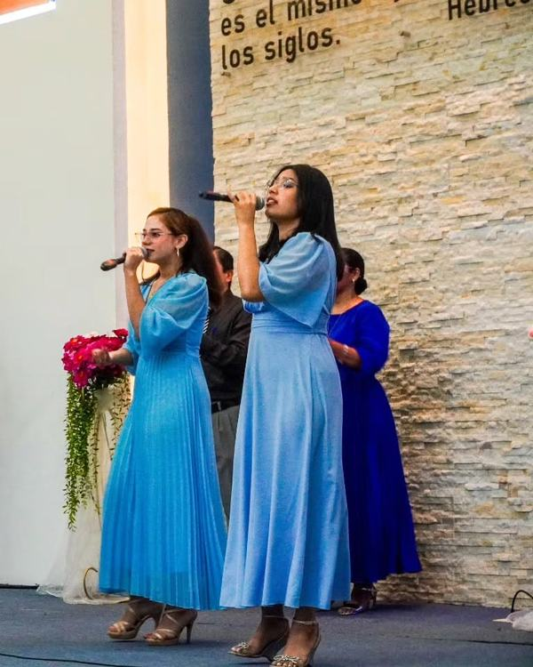
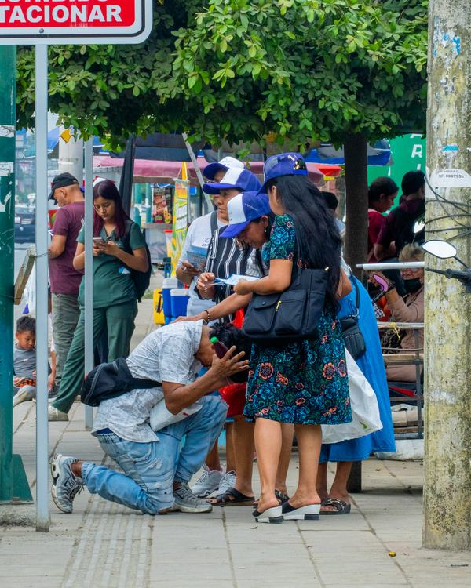
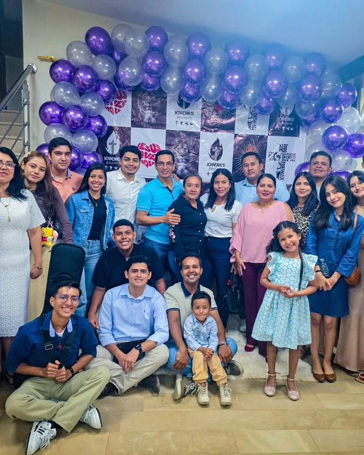

Todos son bienvenidos, no importa dónde te encuentres en tu caminar de fe.
Adoración, palabra y comunión para toda la familia en nuestro salón principal.
Un tiempo dedicado a buscar la presencia de Dios en ayuno y oración.
Nos reunimos para interceder y buscar la presencia de Dios en oración.
Envía tu petición de oraciónSe alternan cada semana: primero el culto de damas, luego el de caballeros, y así sucesivamente durante el mes.
Un espacio especial para fortalecer los matrimonios, una vez al mes.
Profundiza en la Palabra con enseñanzas prácticas para tu vida diaria.
Nos reunimos en el sector de cada célula, en casa de los líderes que abrieron sus puertas para recibirte.
Ver ubicación en el mapaAdoración y enseñanza diseñada especialmente para adolescentes y jóvenes.
Viernes · 9:00 PM
Templo Galilea
Sábado · 10:00 AM
Iglesia Cuadrangular Betel, Recinto Maravilla 2
Domingo · 10:00 AM
Templo Galilea
Sábado · 7:30 PM
Hno. Alejandro García · Gálatas 1:10
Sábado · 7:30 PM
Hno. Adrián Alvarado · Hebreos 12:15
Sábado · 7:30 PM
Hno. Eduardo Lara · Filipenses 2:3

Fecha por confirmar
Transmisión en YouTube

Fechas por confirmar
Por anunciar

Próximamente
Templo Galilea
Consulta el mapa, la dirección y cómo llegar a nuestra sede principal.
Ver ubicación